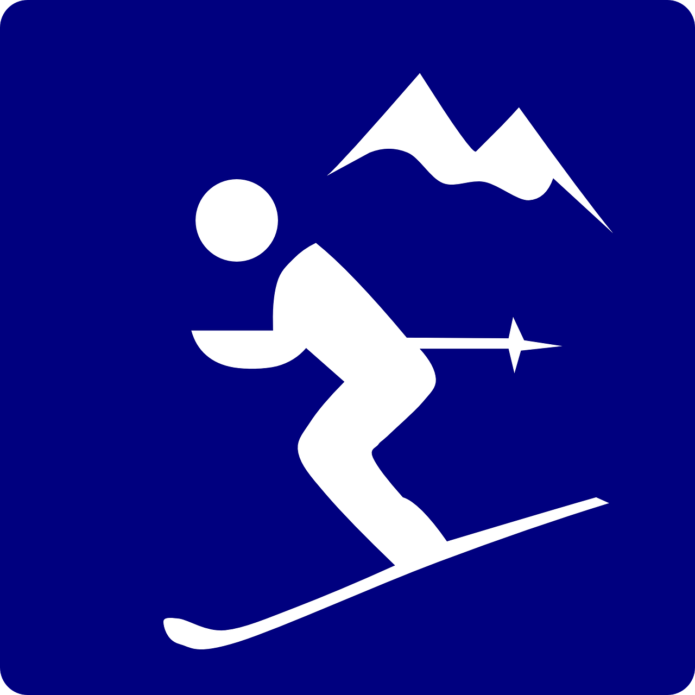

Hugo Unosson
Favoritintresse

Jag älskar att åka skidor! Här kommer några anledningar varför:
1. Utmaningen. Skidåkning kommer med skiftande utmaningar varje dag, varje backe och varje åk. Brant, is, puder, puckel, utrustning, vind. Embrace it!
2. Frihetskänslan. Att få susa fram på berget, av egen kraft och bergets sluttning och blicka rakt ut i vild natur.
3. Mjölksyran. Långa åk och fallhöjd skapar mjölksyra i lår, en dags skidåkning känns i musklerna. Det är träning.
4. Utrustningen. Skidor som hjälper oss in i sväng, stighudar som hjälper oss till orörd terräng. Sittliftar med värme i rumpan, tekniskt avancerade underställ.
5. Farten. I farten ligger adrenalinkicken, de snabba besluten och känslan att vara ostoppbar så länge man själv vill. I farten finns ansvar att förvalta.
Ett av mina favoritställen att åka skidor i är Åre eftersom det ligger i Sverige och har mycket bra möjligheter för offpist-åkning. Bjuder även på ett klipp från Åre.